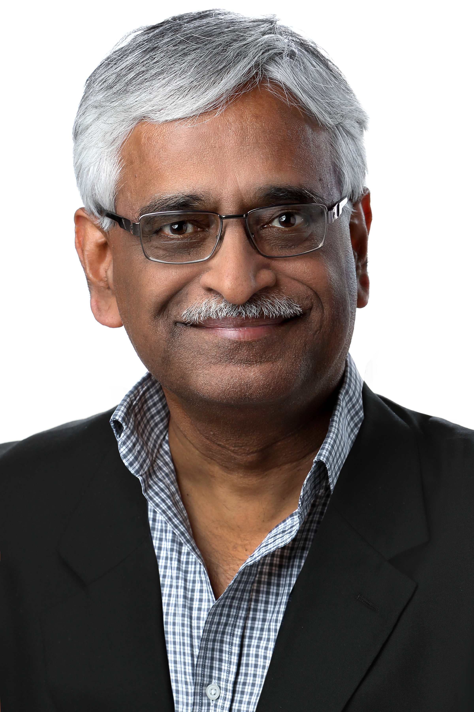
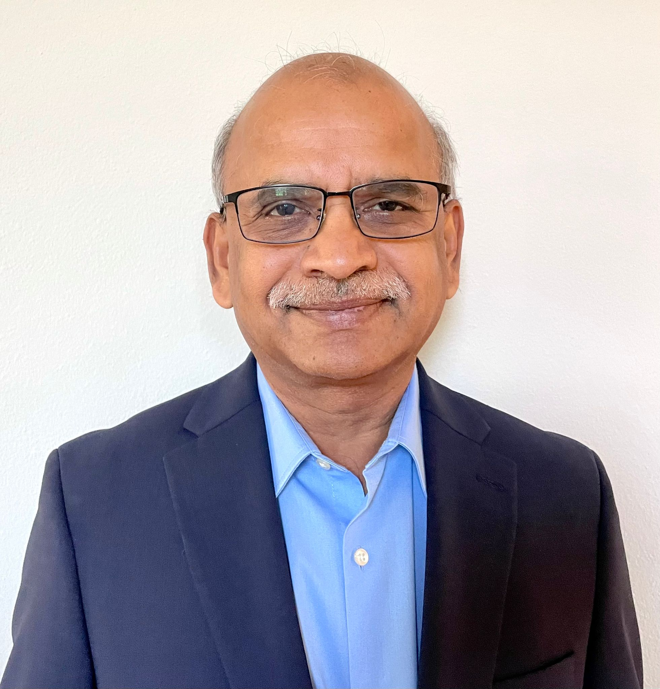
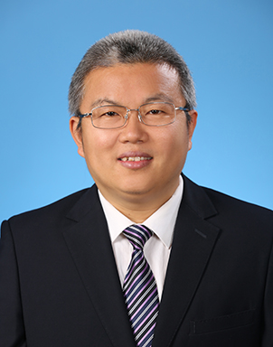

<!DOCTYPE html PUBLIC "-//W3C//DTD XHTML 1.0 Transitional//EN" "http://www.w3.org/TR/xhtml1/DTD/xhtml1-transitional.dtd">

<html xmlns="http://www.w3.org/1999/xhtml" xml:lang="en" lang="en">

<head>


  <meta http-equiv="Content-Type" content="text/html; charset=iso-8859-1" />

  <title>ICDE 2024 Panels </title>


  <link rel="stylesheet" href="icde2024.css" />
</head>
</html>
<html xmlns="http://www.w3.org/1999/xhtml" xml:lang="en" lang="en">
<body style="background-color: rgb(255, 255, 255); font-family: arial; font-size: 10pt;">


<table cellspacing=0 cellpadding=0 border=0 width="100%" >
<tr><td align="center">
<table style="width: 1040px; height: 800px;" cellpadding="0" cellspacing="0" border=0>


  <tbody>


    <tr style="height: 151px;">


      <td width="100%" align="left">


<table width="1040" height="120" border="0" align="left" cellpadding="0" cellspacing="0" bordercolor="#CCCCCC">

<tr>
<td  align="left" valign="middle" colspan=2> </td>		
</tr>
<tr>
<td></td><td valign="bottom"><hr /></td>
</tr>
</table>


<!-- end header !--></td>
    </tr>


    <tr	valign="top">


      <td>

      <table style="width: 100%; height: 100%;" cellpadding="1" cellspacing="0" border=0>


        <tbody>


          <tr valign="top">
			<!-- start side panel !-->
<td style="width: 23%;">
<div id="sidebar">
<table style="width:100%"><tr><th class="tblCellHead" style="background-color:#73231A;color:white;">General Information</th></tr></table>
<ul>
<li><a href="index.html">Conference Overview</a></li>
<li><a href="conference_officers.html">Conference Officers</a></li>
<li><a href="di.html">Diversity and Inclusion</a></li>
</ul>

<table style="width:100%"><tr><th class="tblCellHead" style="background-color:#73231A;color:white;">Program</th></tr></table>
<ul>
<li><a href="program.html">Detailed Program </a></li>
<li><a href="keynotes.html">Keynotes </a></li>
<li><a href="papers.html">Research Papers</a></li>
<li><a href="invited.html">Industry Invited Talks</a></li>
<li><a href="industry.html">Industry &amp; Application  Papers</a></li>
<li><a href="tutorials.html">Tutorials </a></li>
<li><a href="demos.html">Demonstrations</a></li>
<li><a href="DEFT.html">Future Technologies Papers</a></li>
<li><a href="phd.html">PhD Symposium Papers </a></li>
<li><a href="lightning.html">Lightning Talks</a></li>
<li><a href="TKDE.html">TKDE Posters</a></li>
<li><a href="sponsorTalks.html">Sponsor Talks</a></li>
<li><a href="panel.html">Panels</a></li>
<li><a href="workshops.html">Workshops </a></li>
<li><a href="awards.html">Awards </a></li>
<li><a href="social.html">Social Events </a></li>
</ul>

<table style="width:100%"><tr><th class="tblCellHead" style="background-color:#73231A;color:white;">Participant Information</th></tr></table>
<ul>
<li><a href="registration.html">Registration</a></li>
<li><a href="venue.html">Venue  &amp; Accommodation</a></li>
<li><a href="travel.html">Travel Information</a></li>
<li><a href="studentAwards.html">Student Travel Awards</a></li>
</ul>

<table style="width:100%"><tr><th class="tblCellHead" style="background-color:#73231A;color:white;">Calls for Contributions</th></tr></table>
<ul>
<li><a href="CFP_research.html">Research</a></li>
<li><a href="CFP_industry.html">Industry and Application</a></li>
<li><a href="CFP_demos.html">Demonstrations</a></li> 
<li><a href="CFP_tutorials.html">Tutorials</a></li> 
<li><a href="CFP_DEFT.html">Future Technologies Special Session</a></li>
<li><a href="empty.html">Panels</a></li> 
<li><a href="CFP_workshops.html">Workshops</a></li>
<li><a href="CFP_phd.html">PhD Symposium</a></li>
<li><a href="CFP_lightning.html">Lightning Talks</a></li>
<li><a href="CFP_TKDE.html">TKDE Posters</a></li>
</ul>
	
<table style="width:100%"><tr><th class="tblCellHead" style="background-color:#73231A;color:white;">Dates and Guidelines</th></tr></table>
<ul>
<li><a href="important_dates.html">Important Dates</a></li>
<li><a href="empty.html">Formatting Guidelines</a></li>
</ul>

<table style="width:100%"><tr><th class="tblCellHead" style="background-color:#73231A;color:white;">Sponsorship Opportunities</th></tr></table>
<ul>
<li><a href="conference_opportunities.html">Contribution Packages</a></li>
<li><a href="conference_opportunities.html"></a></li>
</ul>
</div>
<!-- end side panel !-->       </td>


                    <td style="border-left: 1px solid #CCCCCC; width: 100%; height: 100%" valign="top"><table border="0" width="100%" height="100%" id="table1">
				        <tr>
				          <td align="left" valign="top">
				             <div id="main"> 

<p align="center"><table border="0" width=100%>
</td></tr>
</table>
</div></p>
		</div>
	</div>
				          
				          
	<div id="main"> 
<p>
	<table cellspacing="0" cellpadding="0" border=0 width=100%>
	<tr><td>
	<!-- HERE STARTS THE CONTENT. -->
	

	<!-- <div class="title">Panel</div> -->
	<p/>

	<table id="Program" style="width:90%">
		<tr>
			<th class="tblCellHead" style="background-color:#AB4951;color:white;">Wednesday May 15th, 2024 @ 17:00</th> 
		</tr>
	</table>
	<table id="panel" style="width:90%">
		<tr>
			<th class="tblCellHead" style="background-color:#433A52;color:white;">Panel on Data Management in the Cloud: Trends and Directions [ In Theater 3, Chaired by C. Mohan ]</th> 
		</tr>
		<tr>
			<td class="tblCellCnt">
				<div id="main">
					<p>
						<div class="title3">Moderator:</div>
						<ul>
							<li>C. Mohan, Hong Kong Baptist University, China</li>
						</ul>
				
						<div class="title3">Panelists:</div>
						<ul>
							<li>Hanuma Kodavalla, Microsoft, USA</li>
							<li>Guoliang Li, Tsinghua University, China (TBC) </li>
							<li>Yannis Papakonstantinou, Google, USA</li>
							<li>Jingren Zhou, Alibaba, China</li>
						</ul> 
					</p>
					
					<div class="title3">Description:</div>
					<p>This panel will focus on the trends and directions with respect to data management in the cloud. The panelists who represent major cloud software vendors like Alibaba, Google, Huawei, and Microsoft, as well as universities will discuss their organizations’ past and current areas of focus. Both product work and research directions will be covered. We will discuss what significant modifications to on-prem DBMSs were needed for cloud deployment, and what some of the open issues are. Leveraging AI in various components of cloud DBMSs will also be an important topic of discussion. Industry analysts’ estimates for market size and different vendors’ market share will also be highlighted.</p>

					<div class="title3">About the Panelists:</div>
					<p/>
					<table>
						<tr>
							<td valign="top">  </td>
							<td valign="top"><b>Dr. C. Mohan</b> is currently a Distinguished Professor of Science at Hong Kong Baptist University, a Distinguished Visiting Professor at Tsinghua University, and a member of the Board of Governors of Digital University Kerala. He retired in 2020 from being an IBM Fellow at the IBM Almaden Research Center in Silicon Valley. He was an IBM researcher for 38.5 years in the database, blockchain, AI and related areas, impacting numerous IBM and non-IBM products, the research and academic communities, and standards, especially with his invention of the well-known ARIES family of database locking and recovery algorithms, and the Presumed Abort distributed commit protocol. This IBM (1997-2020), ACM (2002-) and IEEE (2002-) Fellow has also served as the IBM India Chief Scientist (2006-2009). In addition to receiving the ACM SIGMOD Edgar F. Codd Innovations Award (1996), the VLDB 10 Year Best Paper Award (1999) and numerous IBM awards, Mohan was elected to the United States and Indian National Academies of Engineering (2009). This Distinguished Alumnus of IIT Madras (1977) received his PhD at the University of Texas at Austin (1981). He is the inventor of 50 patents. During 2021, Mohan was the Shaw Visiting Professor at the National University of Singapore. Since 2016, Mohan has been a Distinguished Visiting Professor of China’s prestigious Tsinghua University. In 2023, he was named a Distinguished Professor of Science of Hong Kong Baptist University. Mohan has served on the advisory board of IEEE Spectrum, and on numerous conference and journal boards. During most of 2022, he was a consultant at Google with the title of Visiting Researcher. He has also been a Consultant to the Microsoft Data Team in 2020. He has given talks in 43 countries. More information can be found in the Wikipedia page at <a href="https://bit.ly/CMwIkP">https://bit.ly/CMwIkP</a> and his homepage at <a href="https://bit.ly/CMwIkP">https://bit.ly/CMoDUK</a> </td>
						</tr>
						<tr>	
							<td valign="top">  </td>
							<td valign="top"><b>Hanuma Kodavalla </b> is a Technical Fellow in the Azure Databases group at Microsoft where he has been for more than twenty years. He previously worked at Data General, Digital Equipment Corporation, Oracle, Sybase and Asera. For more than three decades, Hanuma worked on many aspects of Relational Database Systems and has been instrumental in architecting multiple commercial database systems for high performance and high availability. Hanuma received BTech in Electronics and Communications in 1981 from National Institute of Technology, Warangal, India, MTech in Computer Science in 1983 from Indian Institute of Technology, Chennai, India, and MS in Computer Science in 1988 from University of Massachusetts, Amherst, USA. He has a few publications in database conferences and many patents related to novel implementation techniques for online transaction processing and data warehousing in the areas of concurrency control, recovery, high-availability, query processing and security. </td>
						</tr>
						<tr>	
							<td valign="top">  </td>
							<td valign="top"><b>Guoliang Li</b> is a tenured full Professor of Department of Computer Science at Tsinghua University. His research interests include database systems, autonomous databases, machine learning for databases, human-in-the-loop data management, large-scale data cleaning and integration. He was the General chair of SIGMOD 2021, Demo chair of VLDB 2021, Industry chair of ICDE 2021. He got VLDB 2017 Early Research Contribution Award, TCDE 2014 Early Career Award,  Best of SIGMOD Papers 2023, SIGMOD 2023 Research Highlight Award. VLDB 2023 Best Industry Paper Runner-up, VLDB 2020 Best Papers, CIKM 2017 Best Paper Award, KDD 2018 Best Papers, ICDE 2018 Best Papers, DASFAA 2023 Best Paper Award, DASFAA 2014 Best Paper Runnerup, APWeb 2014 Best Paper Award, EDBT 2013 Similarity Join and Search Champion. He regularly served as (Senior) PC Member of SIGMOD, VLDB, ICDE, KDD, WWW. He was serving as associate editor for IEEE TKDE, VLDB Journal, and IEEE Data Engineering Bulletin. </td>
						</tr>
						<tr>	
							<td valign="top">  </td>
							<td valign="top"><b>Yannis Papakonstantinou </b> is a Distinguished Engineer, working on Query Processing and GenAI, at Google Cloud. He is also an Adjunct Professor of Computer Science and Engineering at the University of California, San Diego, following many years of having been a UCSD regular faculty member. Previously, he was an architect in query processing & ETL at Databricks. Earlier, he was a Senior Principal Scientist at Amazon Web Services from 2018-2021 and was a consultant for AWS since 2016. He was the CEO and Chief Scientist of Enosys Software, which built and commercialized an early Enterprise Information Integration platform for structured and semi-structured data. The Enosys Software was OEMed and sold under the BEA Liquid Data and BEA AquaLogic brand names, eventually acquired in 2003 by BEA Systems. His R&D work has been mostly on query processing with a focus on querying semi-structured data. He has published over 120 research articles that have received over 20,000 citations. Yannis holds a Diploma of Electrical Engineering from the National Technical University of Athens, MS, and PhD in Computer Science from Stanford University (1997). </td>
						</tr>
						<tr>	
							<td valign="top"> </td>
							<td valign="top"><b>Jingren Zhou</b> currently holds the position of Chief Technology Officer at Alibaba Cloud, where he plays a pivotal role in driving technology innovation and product development. His responsibilities also include leading the development of AI foundational models and their applications in various business scenarios at Alibaba Cloud. Before this role, he has led work to develop advanced techniques for personalized search, product recommendation, and advertising at Alibaba's e-commerce platform and Alipay's online payment platform. Prior to his time at Alibaba, he was a veteran at Microsoft, where he led Big Data, and AI research and development. His research interests span across cloud computing, databases, and large-scale machine learning systems. He holds a BS in Computer Science from the University of Science and Technology of China, and a PhD in Computer Science from Columbia University. He is a Fellow of IEEE.  </td>
						</tr>
					</table>
				<p/>
				</div>			
			</td>


			</td>
		</tr>
		</table>

	<!-- HERE ENDS THE CONTENT.-->
						
</td></td>       	  
</tr></table>


	             
	                </div>
	                
			               </td>
				        </tr>
				        <tr><td>
				        </td></tr>
			            </table>
			            

			            
				      <!--end of mainbody-->
            
			<p> <br />
            </p>            <hr> <div class="discl"><b>Disclaimer:</b> The Organizing Committee of a ICDE conference is not liable for any loss or damage arising from the activities of this particular conference as exercised by its agents: conference organizers, carriers, proceedings, publications and program committee.</div>
				       </td>
			<td style="width: 1%"></td>
          </tr>
        </tbody>
      </table>      </td>
    </tr>


<!--footer-->
  
       <tr>
	<td class="linkfooterbar" width="100%" align="center" bgcolor="#7d1a14">

<div id="textbar">&copy; ICDE 2024</div>
</tr>

<tr> 
    <td align="center">
      <table cellspacing=0 cellpadding=1 border=0 width=100% bordercolor="#077431">
	  <tr>
	  <td align="center" class="linkfooter">
        </p>        </td>
		</tr>
	  </table>    </td>
</tr>
  
  </tbody>
</table>
</td></tr></table>

</body>

</html>


	
